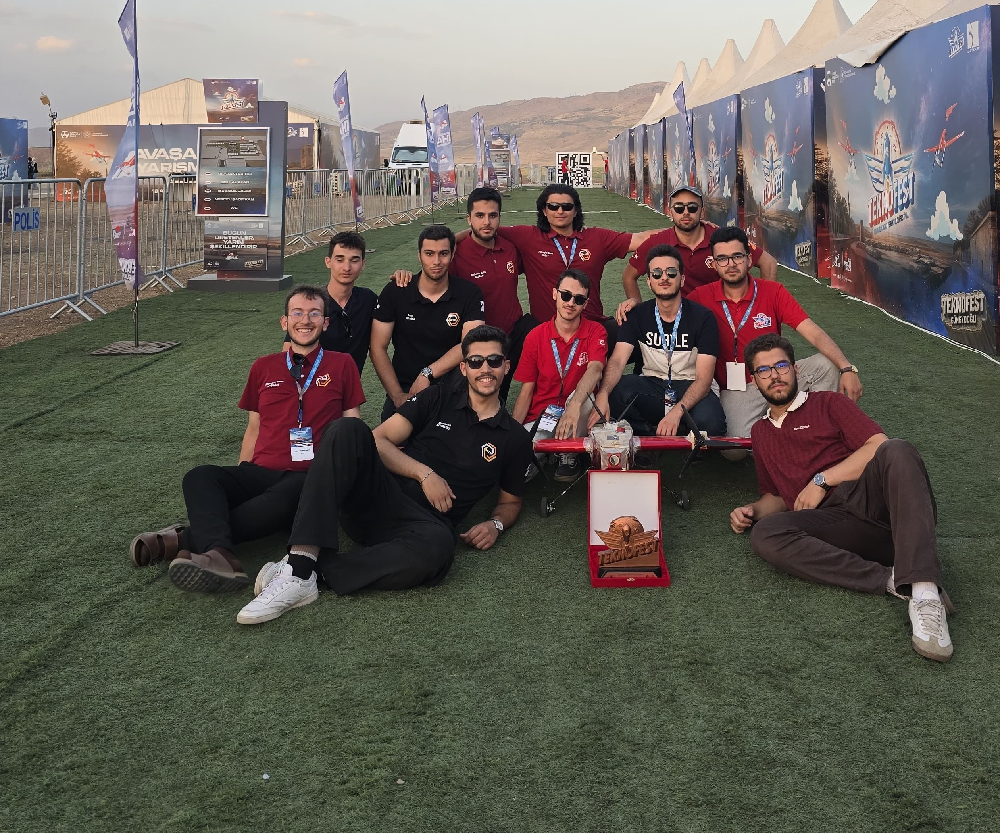
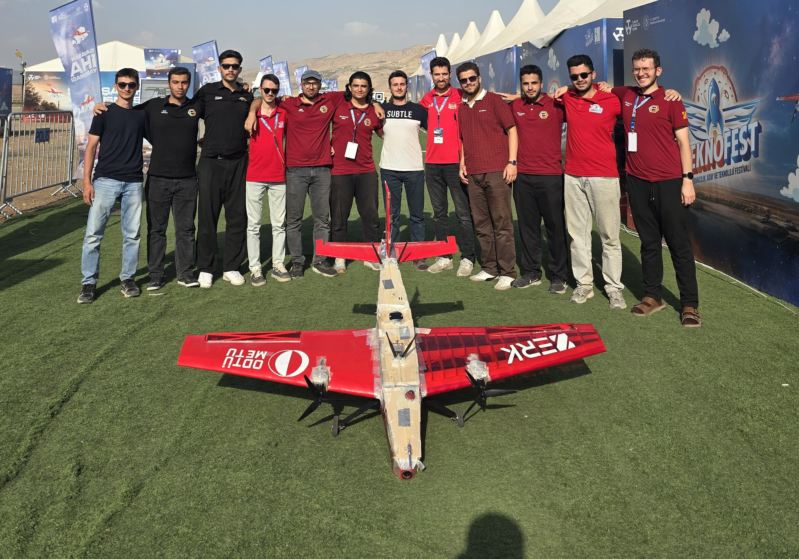

Geleceğin Otonom
Hava Gücü
ODTÜ, Bilkent, Hacettepe ve TOBB ETÜ mühendislik konsorsiyumu ile TEKNOFEST Savaşan İHA yarışması için derin öğrenme tabanlı hedef takip ve tam otonom İHA platformları geliştiriyoruz.
Sınırları Zorlayan
Milli Mühendislik Vizyonu
ALTEK Takımı; 2024 yılında ülkemizin seçkin üniversitelerinden (ODTÜ, Bilkent, Hacettepe, TOBB ETÜ) gelen öğrenciler tarafından kuruldu. TEKNOFEST Savaşan İHA yarışmasında göklerdeki yerini almak üzere otonom seyrüsefer, YOLO kilitlenme algoritmaları, kamikaze dalış mekanizmaları ve gelişmiş aviyonik donanımlar üretiyoruz.

ALTEK 2026 Savaşan İHA Platformu

ALTEK 2026 Otonom Muharebe Sistemi
10Hz deterministik karar döngüsü, gerçek zamanlı yapay zeka ile hava-hava hedef tespiti ve kilitlenme, otonom takip ve kamikaze dalış manevralarını yüksek doğrulukla icra eden ileri mühendislik platformumuz.
İHA Görev Yetenekleri
- check_circle Hibrit 3-Katmanlı FSM: Görev durumlarını (PATROL, TRACKING, LOCKING, KAMIKAZE, RTL) 10Hz deterministik döngüde asenkron yöneten akıllı karar mimarisi.
- check_circle APF ile Dinamik HSS Kaçınması: Yapay Potansiyel Alanları ve vortex kuvvetleriyle sanal radar (HSS) ve geofence sınırlarından otonom kırımsız sıyrılma.
- check_circle Dubins Aerodinamik Güdüm: Sabit kanat aerodinamik dönüş kısıtlarını hesaplayan OMPL/UTM tabanlı kavisli seyrüsefer ve hedef yaklaşma algoritmaları.
- check_circle Çift Eksenli Canlı PID Kilitlenme: Roll ve Pitch eksenlerinde yer istasyonundan canlı ayarlanabilen PID kazançlarıyla hedef İHA'yı optik eksende sabitleme.
- check_circle 30 FPS Vision Pipeline & IPC: Uçuş döngüsünden izole Linux POSIX Shared Memory (<0.01 ms) ve GStreamer H.264 donanım hızlandırmalı canlı video telemetrisi.
- check_circle Kırım Önleme Kalkanı (Safety Shield): Sanal çember sınır kaçış backstop'u ve irtifa kurtarma filtresiyle donanım seviyesinde tam uçuş güvenliği.
TALON İHA & Uçuş Testleri
Saha testleri başarıyla tamamlanan Talon İHA platformumuzu ve aerodinamik telemetri verilerini inceleyin.
Geleceği Birlikte İnşa Edelim
Milli Teknoloji Hamlesi doğrultusunda ALTEK Teknoloji Takımı'na kurumsal veya teknik destek sağlamak için bizimle iletişime geçin.